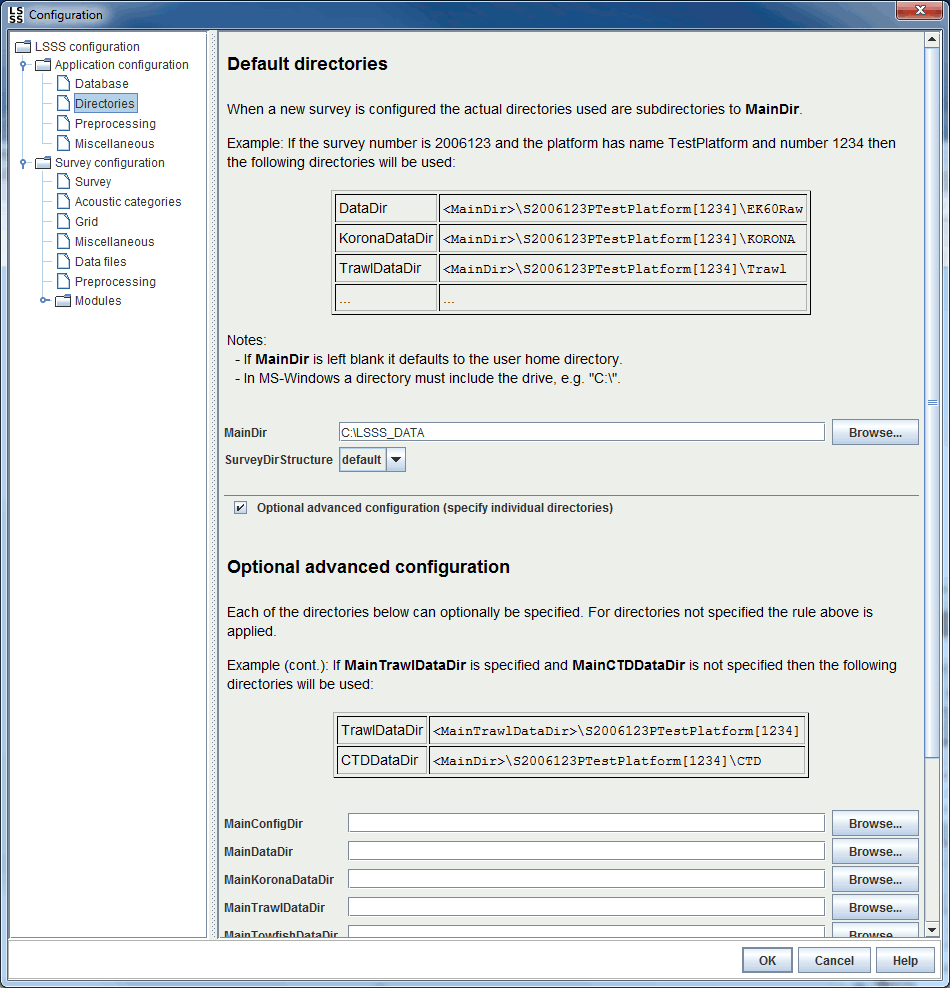

The main directories are meant to contain subdirectories for each survey. When a new survey is set up, the actual directories used are subdirectories to the main directories. The names of the subdirectories are derived from survey and platform.
The naming scheme of the subdirectories uses the parameter SurveyDirStructure. The default naming scheme is given in the example below. Other naming schemes are defined in files in the directory [LSSS installation]/lsss/data/surveyDirStructure.
The parameters BackupDirStructure and BackupDestinationDir are used when backing up survey data. The BackupDirStructure parameter defines the resulting directory structure, and the BackupDestinationDir gives the default location for the backed up survey directory.
The directories derived from the main directories together with survey and platform are default values used when defining a new survey. These directories can later be changed in [Survey configuration - Data files].
Example:
- The MainDir is set to C:\surveys and the other directories are left blank.
- The SurveyDirStructure is set to default.
- The platform is called TestPlatform with id 1234.
- The survey id is 2006123.
Then the survey directory will be C:\surveys\S2006123PTestPlatform[1234] and
C:\surveys\S2006123PTestPlatform[1234]\lsss | Survey configuration files |
C:\surveys\S2006123PTestPlatform[1234]\Raw | Raw data files |
C:\surveys\S2006123PTestPlatform[1234]\KORONA | Preprocessed raw data files |
C:\surveys\S2006123PTestPlatform[1234]\Trawl | Trawl data files |
C:\surveys\S2006123PTestPlatform[1234]\CTD | CTD data files |
C:\surveys\S2006123PTestPlatform[1234]\RefLog | Reference log files |
C:\surveys\S2006123PTestPlatform[1234]\FileDraw | Files with geometrical shapes |
C:\surveys\S2006123PTestPlatform[1234]\Reports | Generated reports |
C:\surveys\S2006123PTestPlatform[1234]\Work | Work files |
C:\surveys\S2006123PTestPlatform[1234]\Export | Exported files |
It is also possible to specify a default root directory for each of
the data input types. If in the example above MainDataDir is set to C:\data then the directory for raw data files will be
C:\data\S2006123PTestPlatform[1234].